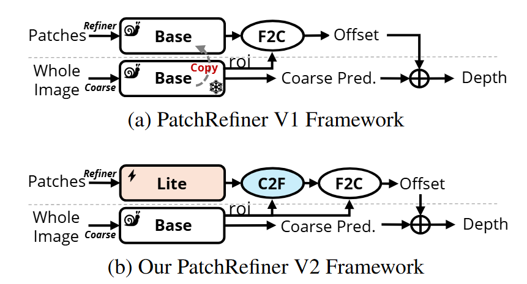
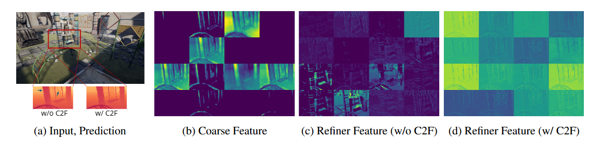
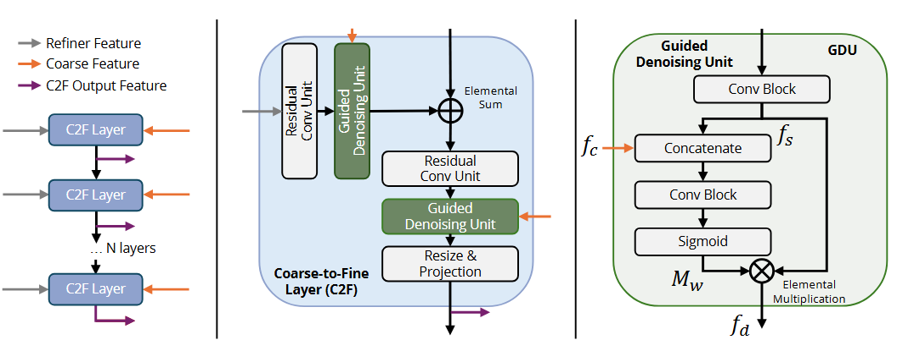

The PR framework encounters significant challenges with the computational efficiency and scalability for real-world applications due to the shared usage of the base depth model (e.g., ZoeDepth) across both the coarse and refiner branches. For a given input image, while the coarse branch processes the downsampled image once to gather global information, the refiner branch requires multiple inferences (at least 16 in PR's default mode) for the patches. Since both branches share the same architecture, the refiner branch becomes the primary efficiency bottleneck. Our goal is to alleviate this bottleneck as much as possible.
Moreover, a heavy framework makes end-to-end training infeasible due to GPU memory limitations. The PR framework has to adopt two stages for training the framework, where global and local branches are trained sequentially. This results in a long training time and suboptimal performance. While the authors claim that multiple-stage training could potentially lead to stage-wise local optima, our goal is to pursue end-to-end training.

Framework Comparision: PRV1 vs. PRV2
We propose a simple solution to address PRV1's limitations: a lightweight architecture for the refiner branch.
This substitution significantly increases inference speed, reduces the model size, and enables end-to-end training. However, it also results in a noticeable decline in refinement quality compared to previous methods. We attribute this decline to the lack of depth-aligned feature representation in the refiner branch.
To compensate for the loss in model capacity and depth-pretraining by the proposed substitution, we introduce a better architecture design, a Coarse-to-Fine (C2F) Module, and a fast and simple pre-training strategy, Noisy Pretraining (NP).
Coarse-to-Fine (C2F) Module and Noisy Pretraining (NP)

Visualization of F2C input feature maps. Without the C2F module, the refiner features are noisy and hard to interpret. (d) The C2F module helps denoise the refiner features, leading to clear boundaries and better results.

Coarse-to-Fine (C2F) Module Overview
C2F: The proposed Coarse-to-Fine (C2F) module processes the multi-scale features extracted from the lightweight encoder through N successive C2F layers in a bottom-to-up manner, mirroring the design of the Fine-to-Coarse (F2C) module. Each C2F layer is designed to enhance and denoise the refiner features progressively with the help of coarse feature representations.
NP: Prior to the high-resolution training, we pretrain the lightweight encoder along with the C2F and F2C modules. We randomly generate the coarse features using a normal distribution as inputs. This forces the refiner branch to learn depth-relevant features without any guidance from the coarse branch.
Scale-and-Shift Invariant Gradient Matching Loss
Finally, the PRV1 employs the Detail and Scale Disentangling (DSD) training strategy to adapt the high-resolution depth estimation framework to real-domain datasets, which enables learning detail from synthetic data and scale from the real domain. To isolate the scale from the synthetic data, the DSD strategy uses a ranking loss and Scale-and-Shift Invariant (SSI) loss.
We propose to replace the SSI loss with the Scale-and-Shift Invariant Gradient Matching (SSIGM) loss to learn high-frequency details from the synthetic data directly.